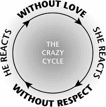

I wrote this book out of desperation that was turned into inspiration. As a pastor, I counseled married couples and could not solve their problems. The major problem I heard from wives was, “He doesn’t love me.” Wives are made to love, want to love, and expect love. Many husbands fail to deliver. But as I kept studying Scripture and counseling couples, I finally saw the other half of the equation. Husbands weren’t saying it much, but they were thinking, She doesn’t respect me. Husbands are made to be respected, want respect, and expect respect. Many wives fail to deliver. The result is that five out of ten marriages land in divorce court (and that includes evangelical Christians).
As I wrestled with the problem, I finally saw a connection: without love from him, she reacts without respect; without respect from her, he reacts without love. Around and around it goes. I call it the Crazy Cycle—marital craziness that has thousands of couples in its grip. In these first seven chapters I will explain how we all get on the Crazy Cycle—and how we all can get off.